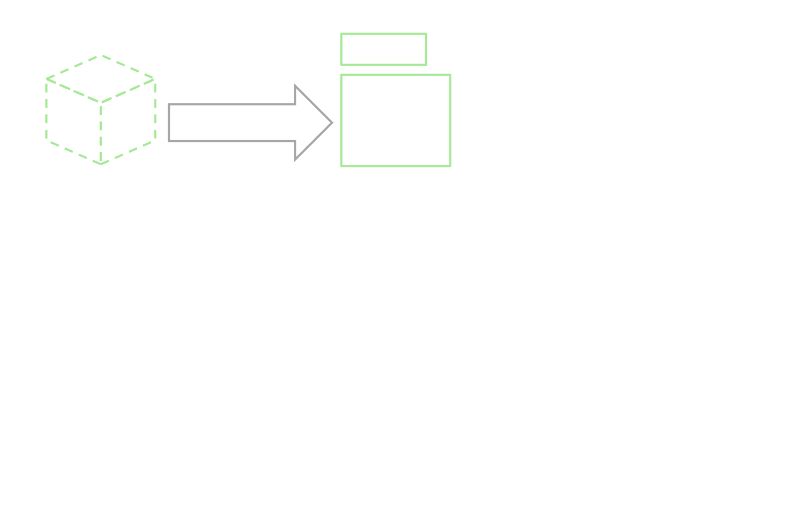

Introduction to
Content Types


Drupal and content
Nodes and Types

Nodes and Types

Nodes and Types

Nodes and Types

Drupal stores content as nodes
All nodes have a content type
Content types are defined by the site builder
(That's you)
Categorizing Content

Let's Break that Down
Let's Break that Down
Different Types, Different Data

Different Fields
But What About These Two?

Different Types, Different Uses
Different ways it's displayed or managed
So What is a Content Type?
So What is a Content Type?

So What is a Content Type?
So What is a Content Type?
So What is a Content Type?

Creating Content Types
What is a Content Type Made Of?

What is a Content Type Made Of?

What is a Content Type Made Of?

What is a Content Type Made Of?

What is a Content Type Made Of?

Why Structure Content?
"Just Make it Work Like Word"
We Need Smarter Content
Can't we just truncate our blobs?
Short answer: No.
Why Truncation is Bad
Real AI Based on the Human Brain
Building Adaptable Content
Content Packages
What if We Already Have Content?
Summary
Thank you!
Background by Artwyrd